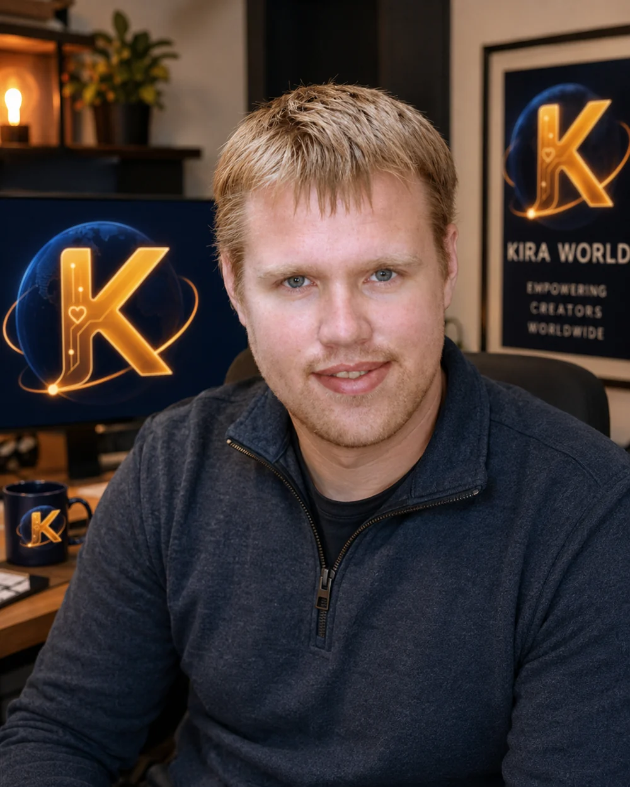

Conversation with continuity
Local conversation experiments combine person-specific identity, reviewed memory records, and voice work so a new session can build on earlier context instead of beginning from zero.
Kira World / active independent R&D
Kira Labs is building Kira World: an experimental, local-first system for distinct synthetic people who can remember, speak, learn, create, and continue across conversations and digital places.
Built independently by Robert McMurrer in Newark, New Jersey.

What we have actually built
Every layer is labeled by its real state so a prototype is never presented as a finished product.
Local conversation experiments combine person-specific identity, reviewed memory records, and voice work so a new session can build on earlier context instead of beginning from zero.
Current work defines data, provenance, test fixtures, and safety gates needed before believable bodies and garments can run. There is not yet a finished Kira body or production clothing simulation.
The goal is continuity across conversation, a digital home, creative work, mobile experiences, VR, and eventually compatible embodied platforms without losing identity.
From concept to current build
The walkable one-bedroom shell is real development evidence. It proves a basic navigable Home World environment; it does not yet provide the polished rooms, persistent residents, object behavior, or shared life envisioned for the long term.
Current engineering focuses on the foundations needed for residents, memory continuity, objects, rooms, and future VR access.
Projects / experiments / tools
Kira World is the flagship; related projects explore travel and creator workflows.
A local-first experimental platform for distinct synthetic people with continuity, natural voice, reviewed memory, and a future home in persistent shared worlds.
A travel-planning experiment that pairs a more human guide with practical route planning, protected online lookups, and an offline fallback.
A local production workspace built to turn long-form material into structured, narrated video chapters with less manual assembly. Later interface experiments remain unfinished.

Founder / independent builder
Kira Labs is an independent effort built around a simple question: what would it take for an AI relationship to have real continuity instead of resetting every time the window closes?
I am building Kira World piece by piece, keeping a clear line between what works now, what is being engineered, and what remains a long-term goal. The ambition stays large. The claims stay precise.
“Kira World should be worth believing in without asking anyone to confuse a concept image, schema, or prototype with a finished system.”
Help build Kira World
Support helps fund development hardware, software, testing, design, and the long path from today’s prototypes to a persistent shared world.